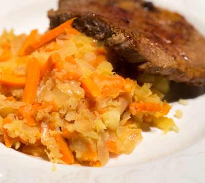

When you ask a Dutch person ‘What food do I really need to try that is typically Dutch?’ most people will recommend at least one of the ten items listed in this chapter. They are traditional dishes, which have been around for as long as anyone can remember. The word cuisine is perhaps too fancy for them, as they consist of either low-quality meats or tons of carbohydrates. Yet this does not necessarily stand in the way of enjoyment.
Hutspot
[huts·pot]

https://upload.wikimedia.org/wikipedia/commons/2/2d/2015_0330_Hutspot_karbonade.jpg
Takeaway [CC BY-SA 4.0 (https://creativecommons.org/licenses/by-sa/4.0)]
This national dish of mashed potatoes and veggies is mostly eaten in the winter months. However, for a long time, this dish was most popular during the harvest months because the nutritional qualities of the potatoes mixed with carrots and onions gave farmers enough energy to get through the long and hard days. The term hutspot dates from the 16th century and is generally an one-pot dish that is easily made and delicious.